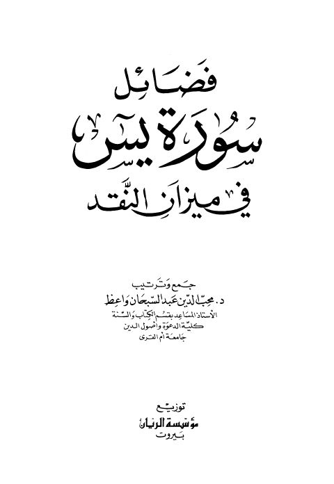

Downloads need an internet connection.
فضائل سورة يس في ميزان النقد
Authors: محب الدين عبد السبحان واعظ
Publishers: مؤسسة الريان
**▫️ العنوان: فضائل سورة يس في ميزان النقد** ▪️ المؤلف: #محب_الدين_عبد_السبحان_واعظ ▫️ الناشر: #مؤسسة_الريان ▪️ تاريخ النشر: 1998م 1419هـ ▫️ بلد النشر: بيروت، #لبنان ▪️ الطبعة: 1 ▫️ عدد الأجزاء: 1 ▪️ الصفحات: 119 ▫️ نوع الوعاء: #كتاب ▪️ التصنيف الرئيسي: #التفسير_وعلوم_القرآن ▫️ التصنيف الفرعي: #فضائل_القرآن ۪